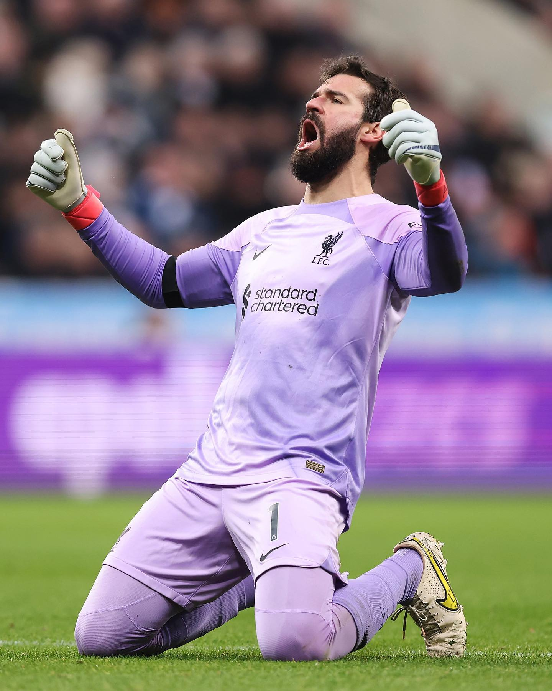
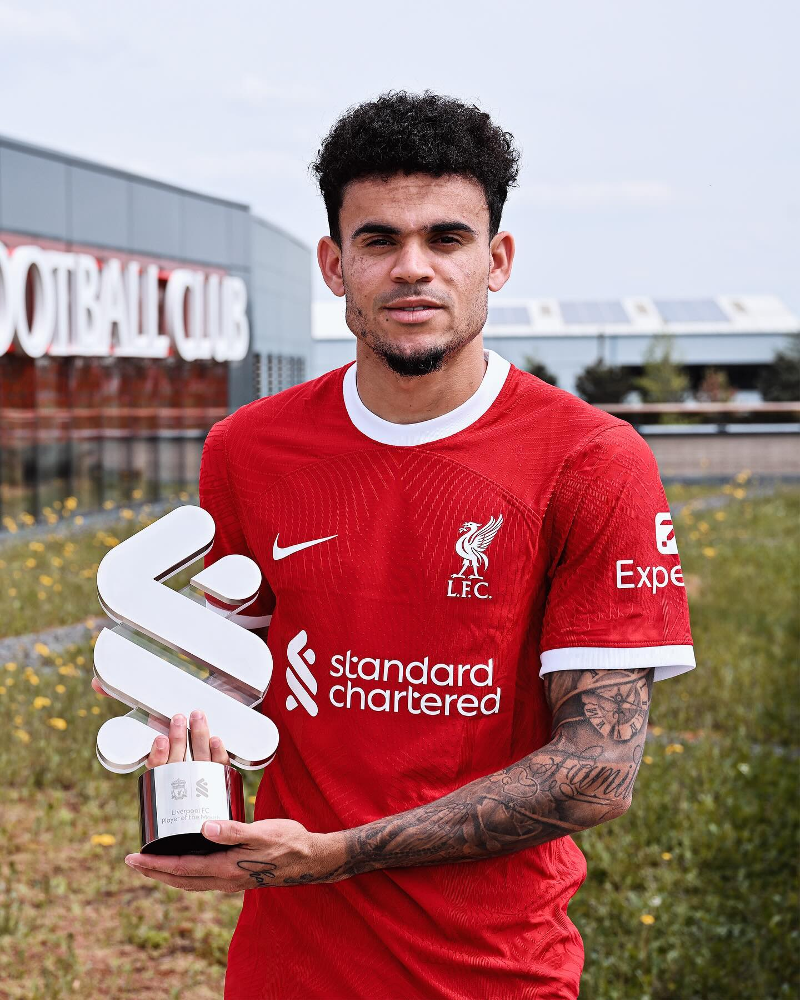
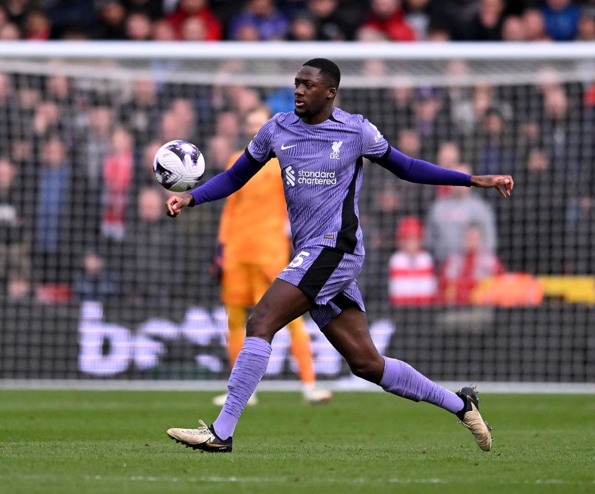
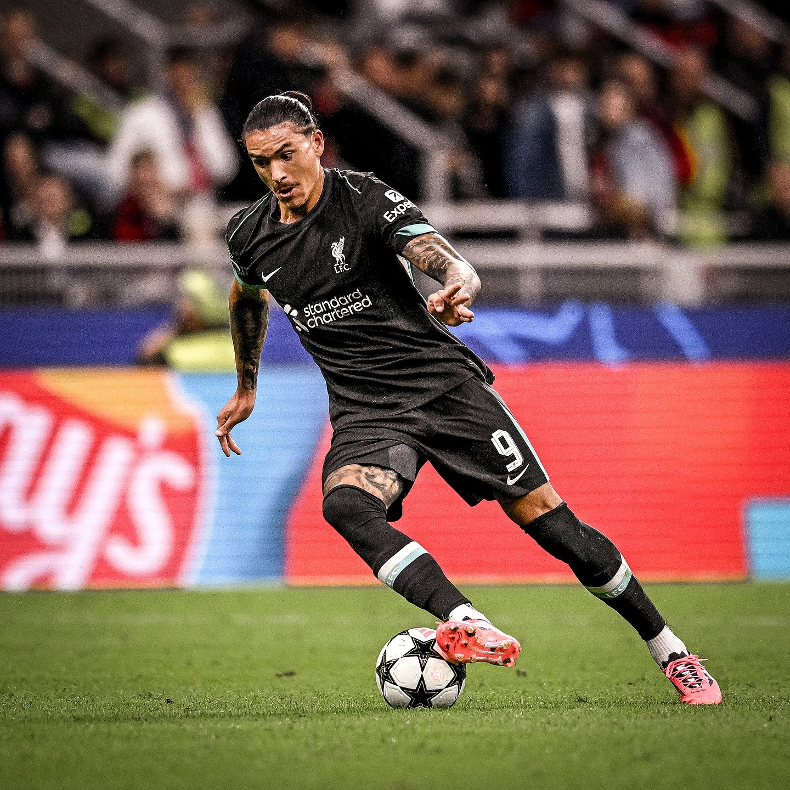
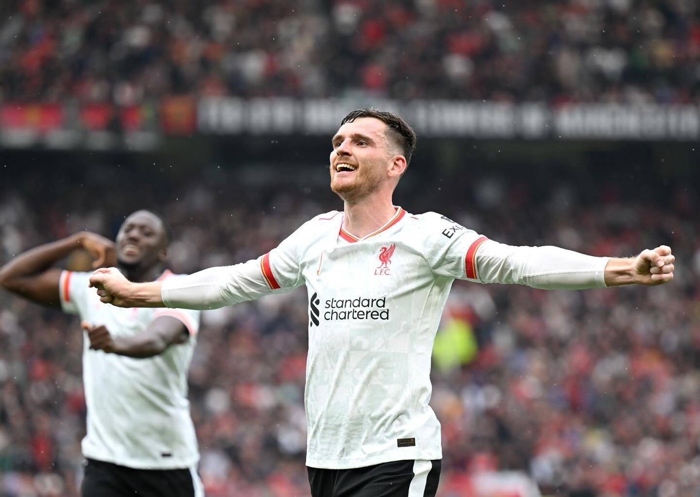
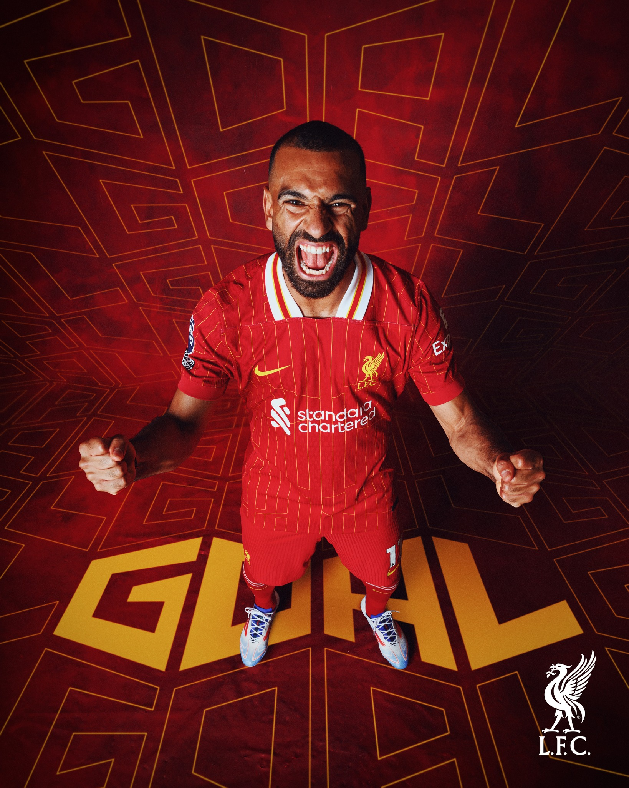
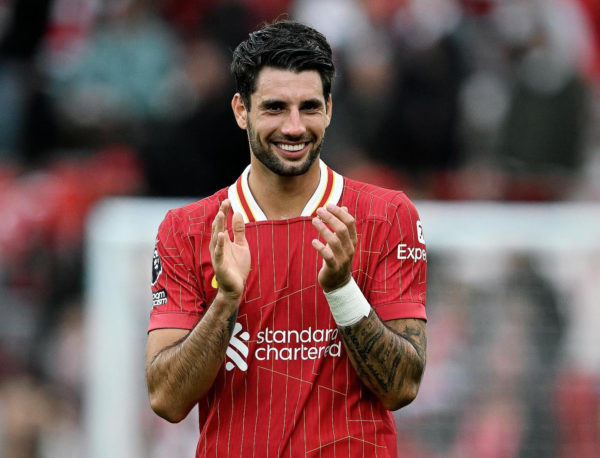
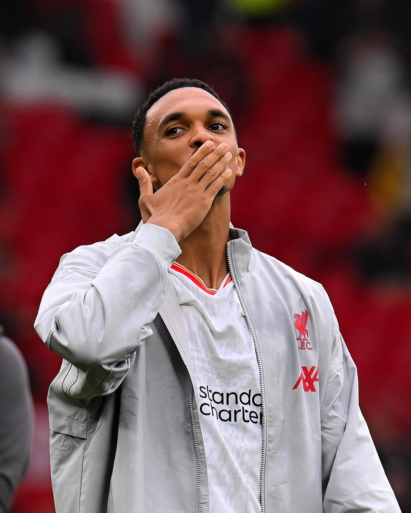
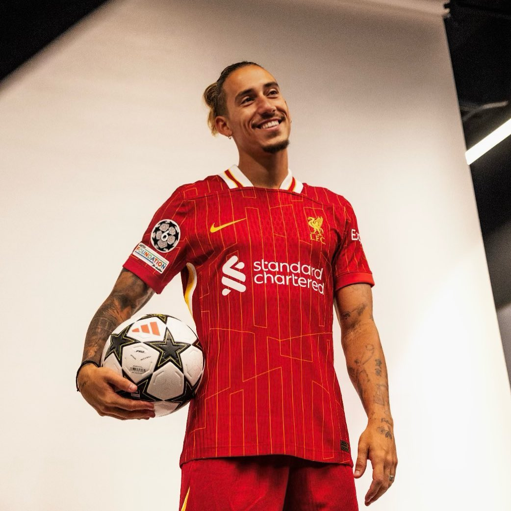

The Champions

Allison
Alisson Becker is Liverpool FC’s star goalkeeper. Born on October 2, 1992 in Brazil, he joined Liverpool in 2018 and quickly became a key player. Known for his excellent shot-stopping and composure, Alisson has been crucial in helping Liverpool win the Premier League and the Champions League. His performances also earned him accolades with the Brazil national team, including a 2019 Copa América win. A calm and commanding presence between the posts, Alisson is one of the best goalkeepers in the world.
Curtis Jones

Curtis Jones is an English professional footballer who plays as a midfielder for Liverpool FC. Born on January 30, 2001, in Liverpool, he joined the club's academy at the age of nine and made his first-team debut in 2019. Known for his versatility, technical skills, and press resistance, Jones has become an essential part of Liverpool's midfield2. He has won several titles with the club, including the Premier League and the FA Cup.
Diaz
Luis Díaz is a Colombian professional footballer who plays as a left winger for Liverpool FC. Born on January 13, 1997, in Barrancas, Colombia, he joined Liverpool in January 2022 from FC Porto. Known for his speed, skill, and goal-scoring ability, Díaz has quickly become a key player for the Reds. He wears the No. 7 shirt and has already won several titles with Liverpool, including the FA Cup and the Carabao Cup.
Konate
Ibrahima Konaté is a French professional footballer who plays as a centre-back for Liverpool FC. Born on May 25, 1999, in Paris, France, Konaté joined Liverpool in 2021 from RB Leipzig. Known for his height, strength, and defensive skills, Konaté has become a key player for Liverpool, helping the team win the FA Cup and the Carabao Cup. He has also represented the France national team and was part of their squad that reached the 2022 World Cup final.
Mac Allister

Alexis Mac Allister is an Argentine professional footballer who plays as a midfielder for Liverpool FC. Born on December 24, 1998, in Santa Rosa, Argentina, he joined Liverpool in 2023 from Brighton & Hove Albion. Known for his versatility, passing, and goal-scoring ability, Mac Allister has quickly become a key player for the Reds1. He was also part of Argentina's squad that won the 2022 FIFA World Cup.
Nunez
Darwin Núñez is a Uruguayan professional footballer who plays as a striker for Liverpool FC. Born on June 24, 1999, in Artigas, Uruguay, Núñez joined Liverpool in 2022 from Benfica for a fee of €75 million. Known for his speed, agility, and goal-scoring ability, Núñez has quickly become a key player for the Reds. He has also represented the Uruguay national team and was part of their squad for the 2022 FIFA World Cup.
Robertson
Andrew Robertson, commonly known as Andy Robertson, is a Scottish professional footballer who plays as a left-back for Liverpool FC and the Scotland national team. Born on March 11, 1994, in Glasgow, Scotland, Robertson joined Liverpool in 2017 for an initial fee of £8 million. Known for his speed, work rate, and crossing ability, Robertson has become a vital part of Liverpool's defense and attack. He has won several titles with Liverpool, including the Premier League and the Champions League in 2019. Robertson is also the captain of the Scotland national team1.
Sallah
Mohamed Salah is an Egyptian professional footballer who plays as a forward for Liverpool FC and the Egypt national team. Born on June 15, 1992, in Basyoun, Egypt, Salah joined Liverpool in 2017 for a fee of £36.9 million. Known for his speed, dribbling, and goal-scoring ability, Salah has been a key player for Liverpool, helping the team win the Premier League, Champions League, and FA Cup. He is also the club's all-time top Premier League goalscorer.
Szoboszlai
Dominik Szoboszlai is a Hungarian professional footballer who plays as a midfielder for Liverpool FC. Born on October 25, 2000, in Székesfehérvár, Hungary, Szoboszlai joined Liverpool in July 2023 from RB Leipzig. Known for his versatility, attacking mindset, and goal-scoring ability, Szoboszlai has quickly become a key player for the Reds. He wears the No. 8 shirt and has already won the Carabao Cup with Liverpool.
Trent
Trent Alexander-Arnold is an English professional footballer who plays as a right-back for Liverpool FC and the England national team. Born on October 7, 1998, in Liverpool, England, he joined Liverpool's academy in 2004 and made his senior debut in 2016. Known for his exceptional crossing, passing, and set-piece taking abilities, Trent has become one of the best right-backs in the world. He has won several titles with Liverpool, including the Premier League and the Champions League in 2019.
Van Dijk

Virgil van Dijk is a Dutch professional footballer who plays as a centre-back for Liverpool FC and the Netherlands national team. Born on July 8, 1991, in Breda, Netherlands, Van Dijk joined Liverpool in January 2018 for a then-world-record transfer fee for a defender. Known for his strength, leadership, and defensive skills, Van Dijk has been a key player for Liverpool, helping the team win the Premier League, Champions League, and FA Cup. He is also the captain of both Liverpool and the Netherlands national team1.
Tsimikas
Kostas Tsimikas is a Greek professional footballer who plays as a left-back for Liverpool FC and the Greece national team. Born on May 12, 1996, in Thessaloniki, Greece, Tsimikas joined Liverpool in August 2020 from Olympiacos. Known for his defensive skills, work rate, and crossing ability, Tsimikas has become a reliable option for Liverpool's backline. He has won several titles with the club, including the FA Cup and the Carabao Cup.